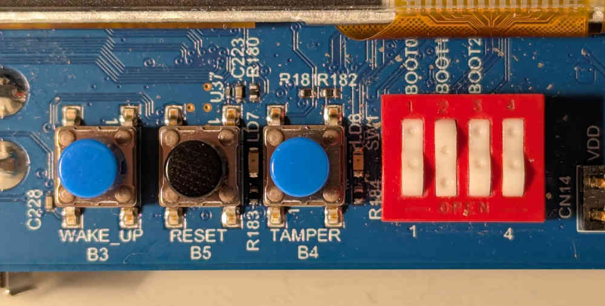

Unix was built on a handful of ideas that turned out to be both powerful and practical. The following discussion blends established Unix facts with interpretive commentary; it does not claim to describe any single historical Unix precisely.
The shell runs commands as programs. There’s no special class of built-ins; if you want a new command, you write a program. By default, programs read from standard input and write to standard output, unless redirected.
Most commands are small filters for text streams. They do one job, and they work together naturally. Connecting them with pipes lets you build bigger tools out of simpler ones.
Everything is a file: user data, programs, directories, and even devices. Directories form a tree; each entry points to an inode, which knows where the data blocks live. Devices show up as files too.
This means that I/O and storage use the same calls: open, close, read, write. That’s the interface for everything. Executables and data files are stored in the same way, reinforcing the idea that a single abstraction suffices.
The kernel is deliberately small. It multiplexes I/O and leaves the rest to user programs. Even init, the first process, is just a program: it opens terminals, prints the login message, and starts shells in a loop.
Processes come from the fork/exec pair. One process copies itself, then overlays the copy with another program. The idea is simple, and it works.
System calls are invoked by a trap instruction, wrapped in library functions so programs don’t depend directly on kernel details. Programs stay independent, and the operating system can change underneath.
Unix was small enough that one person could understand the whole thing. That made it easier to modify, port, and teach. The manuals were short, consistent, and focused on usage, not internals. A second volume provided tutorials and background for those who wanted more.
The guiding principle was: be general, but not too general; portable, but not too portable. If you try to solve every problem in advance, you get bloat. By keeping it modest, Unix was more useful—and paradoxically more general and portable—than larger systems.
Some parts were machine-specific, usually device drivers or bits of assembly. But not many. Most code was reusable, and the exceptions were small. An array of function pointers mapped device numbers to driver routines; that was about as complex as it got. For example, a character device[1] driver needs to expose the following functions:
extern struct cdevsw
{
int (*d_open)();
int (*d_close)();
int (*d_read)();
int (*d_write)();
int (*d_ioctl)();
int (*d_stop)();
struct tty *d_ttys;
} cdevsw[];
The 80/20 rule applied everywhere: make most of the system simple and portable, accept a little complexity when it really pays off. Code was meant to be 80% reusable, not 100%, which avoided the kind of rigidity seen in later systems.
Unix came with all its own sources and tools. It was self-hosting, and people could read, study, and change the code. The system included what you needed, and nothing more. No useless programs, no dead code, and very little irrelevant platform-specific clutter.
The philosophy was to write programs you would actually use, not ones meant to satisfy a standard or some hypothetical future need.
The enduring lesson of Unix is that simplicity beats complexity. Interfaces were orthogonal, text was the universal medium, and programs were small and self-contained. Each one did one thing, and did it well.
That philosophy proved more important than any single feature. It made Unix portable, teachable, and durable. It showed that you don’t need a committee or a grand design to build something powerful. You need clarity, restraint, and the discipline to write only what you need.
Unix also suggests how to go further. Small, portable, self-contained programs can approach the kind of stability that TeX achieved—systems so refined that they don’t need to change.
Portability itself can be modular. The Wollongong group[2] showed this by first porting Unix piece by piece to an Interdata 7/32, running it alongside the host system, and then replacing the host functions with assembly routines. That approach points toward kernels that are more modular, where pieces like fork and exec could be reused without bringing along a whole scheduler.
Device drivers can also be simplified. One idea is to treat them as user processes whose IDs match their device numbers. They would implement the usual open, read, and write interfaces, but otherwise behave like ordinary programs: start and stop freely, hold their own memory, receive signals. The kernel would not “manage” them, yet the familiar Unix file interface would still apply.
The same lesson holds today. Artificial intelligence can sometimes repair or adapt programs automatically, but only if the systems are small and self-contained. Large, tangled software offers no foothold. Unix worked because it avoided dead code, avoided over-abstraction, and made each interface simple enough to understand and replace.
Finally, Unix showed that the way forward can’t be too innovative. If “the way” is too radical, no one will follow it.[3] The genius of Unix was that it was just radical enough.
From version 7 Unix, found in
/usr/sys/h/conf.h. ↩︎
Juris Reinfelds: The First Port of Unix. Department of Computing Science, The University of Wollongong. See also Richard Miller: The First Unix Port. Miller Research Ltd. (Both documents undated. Why don’t people date all their documents!?) ↩︎
Still looking for the source of this quote … ↩︎

This is Part 1 in the series: Linux on STM32MP135. See other articles.
Wouldn’t it be great to have a single board computer that runs just Linux? That is, no external libraries, tools, driver modules—just the kernel binary, and whichever programs you choose to run under it. After all, Linux is just a C program, so how hard can it be to compile and run it? Read on to get started exploring the wild world of embedded Linux.
In this tutorial, we show how to get a basic “minimal” Linux installed on the STM32MP135 evaluation board with a minimum of steps or obscure scripts. For detailed explanations, refer to the excellent writeup from Bootlin.
Get a copy of Buildroot:
$ git clone https://gitlab.com/buildroot.org/buildroot.git
$ cd buildroot
As of this writing, the latest commit in this repository is
$ git rev-parse HEAD
bbb0164de08f761a3399c961700db44befff5c70
Find the default configuration appropriate for this board:
$ make list-defconfigs | grep stm32mp135
This shows that stm32mp135f_dk_defconfig is available. Install it by calling
make on it:
$ make stm32mp135f_dk_defconfig
Let’s enable the USB mode for Arm Trusted Firmware (TF-A) so that we will be able to use USB flashing in the future. Open
$ make menuconfig
Navigate under Bootloaders ---> ARM Trusted Firmware (ATF) and add the
following at the end of the “Additional ATF build variables” string:
STM32MP_USB_PROGRAMMER=1
Then select “OK”, and “Esc” your way out of the menuconfig. Make sure to say “Yes” when asked whether to save the new configuration.
Run the build, and collect logs into a file:
$ time make >log.txt 2>&1
On my dual-core i5-7300U laptop, this took about an hour and a half.
Watch the build from another terminal:
$ tail -f log.txt
Copy the generated image to an SD card (assumed to be at /dev/sdb):
$ sudo dd if=output/images/sdcard.img of=dev/sdb bs=1M
Time to run it on the evaluation board! Set it up as follows:
CN12, labelled PWR_IN)
to a powered USB hubCN10, left of the screen) to a desktop computer,
which will enumerate as a serial port (/dev/ttyACM0 on my computer).
Set the DIP switches to boot from the SD card as shown in the image below. In
this orientation, press in on the upper side of the rockers of BOOT0 and
BOOT2, and on the lower side for BOOT1.

Press the black reset button and if everything went right, you should see the kernel boot messages displayed on the serial monitor, until the login prompt gets displayed. Done!
Welcome to Buildroot
buildroot login: root
# uname -a
Linux buildroot 6.12.22 #1 SMP PREEMPT Wed Sep 3 20:23:46 PDT 2025 armv7l GNU/Linux
This is, to my knowledge, the fastest way to get started with embedded Linux on
“real” hardware in terms of number of steps. However, it does not result in the
most minimal distribution. Besides the Linux kernel, the default configuration
pulls in a number of large programs, such as U-Boot, ATF, OP-TEE, and more.
(Examine buildroot/dl) after building to see all the stuff that got downloaded
in the build process.)
For someone used to bare-metal embedded work, the size and complexity of this auxiliary software is utterly baffling. A bootloader with more lines of code than my whole project? Several different compilers and interpreters (C, Rust, Perl, Python) needed for a “Hello, world!?”
In my mind I hold an ideal of the “pure” essence of Unix: there is one kernel,
which at the end of its boot process invokes one user-space program (init),
which then does anything it wants to. I believe in the simplicity of the Linux
boot process, as outlined by Russell King in the 2002 masterpiece, “Booting ARM
Linux”:
r2It is time we regain the pristine uncomplicated state that used to exist before everything became bundled and containerized and wrapped inside countless layers of abstraction that are supposed to make things simpler, but in the end serve only to confuse everyone.
In the next articles, we will take this “primordial mess” and cut it down to size. Stay tuned!

Working on a FreeRTOS-based project running on the NXP Kinetis K64, I wanted to read data from several UART interfaces. The default “easy” method using interrupts is easy to set up via the NXP MCUXpresso Config Tools; the problem is that the UART peripheral only has a few bytes of built-in buffer. If the data is arriving at the interfaces faster than the firmware can read it, the tiny buffer immediately overflows and part of the data is lost.
This is obviously a task for Direct Memory Access (DMA): let the data arrive into a much larger buffer, from where the software can take characters at its leisure. In this article, we will briefly contrast three ways of receiving data from UART: interrupt-based, simple DMA, and DMA with a circular buffer (aka ring buffer).
The “point-and-click” method works out of the box with the Config tools. Leave things at their default values, or change whatever is necessary. In my setup, I had the values shown in the image below.

Even the interrupt handler is provided by the tool. Click on “Copy to clipboard”, and adapt as necessary. All that is needed is to read the status flags and read a byte of data, and push it to a FreeRTOS queue that we set up previously:
void UART0_SERIAL_RX_TX_IRQHANDLER(void)
{
uint32_t intStatus = UART_GetStatusFlags(UART0);
if ((kUART_RxDataRegFullFlag | kUART_RxOverrunFlag) & intStatus) {
const uint8_t data = UART_ReadByte(UART0);
xQueueSendToBackFromISR(rx_queue, &data, NULL);
}
}
This seems like it couldn’t be simpler, and it just should work. Indeed, for baud rates at or below about 9600, it does work almost reliably. And yet sometimes, for no good reason, a byte gets dropped. Is that possible?
Let’s see. At 115,200 baud, we get a character every 8.7 μs. It’s entirely possible that some other interrupt or critical section takes priority over this one for much longer than that, especially looking at some of the rather long Ethernet ISRs supplied with the NXP SDK. If we have less than 10 microseconds to process a character before it goes away, we’ll probably miss many of them! Onwards to DMA.
With direct memory access, the UART peripheral should be able to place the bytes directly in a software buffer, without having to go through an RTOS queue. Besides being much faster, we can also make the queue almost arbitrarily large, ensuring that we’ll be able to get to the data eventually and process it.
Thanks to the Config Tools, setting this up is again very straightforward. Just enable some checkboxes and set up DMA channels, as I did in the image below.

This time, we do not have a handy “Click to get code” button. Instead, ChatGPT or Gemini or Claude are happy to write something that nearly works. In a dedicated FreeRTOS task, let’s poll for characters as they arrive into the buffer:
for (;;) {
uint32_t bytesWritten;
if (UART_TransferGetReceiveCountEDMA(UART0_PERIPHERAL,
&UART0_UART_eDMA_Handle,
&bytesWritten) != kStatus_Success) {
vTaskDelay(pdMS_TO_TICKS(1));
continue;
}
while (readIndex != (bytesWritten % DMA_BUF_SIZE)) {
char c = uartRxBuf[readIndex];
readIndex = (readIndex + 1) % DMA_BUF_SIZE;
// now do what you want with the received character
}
vTaskDelay(1);
}
Note the vTaskDelay(1) calls which ensure that this task does not starve
lower-priority tasks of processor time.
In the above, the chatbot made use of the function
UART_TransferGetReceiveCountEDMA() from the NXP SDK and implemented the ring
buffer wraparound with some modulo operation that’s probably about correct. But
what happens when the buffer gets filled up? In that case, an interrupt triggers
the DMA callback, which simply restarts the DMA to receive data back into the
beginning of the buffer:
static void uart0_callback(UART_Type *base, uart_edma_handle_t *handle,
status_t status, void *userData)
{
uart_transfer_t rxXfer = {
.data = uartRxBuf,
.dataSize = DMA_BUF_SIZE
};
UART_ReceiveEDMA(UART0_PERIPHERAL, handle, &rxXfer);
}
This works great, but has an unfortunate limitation. When the buffer is at the end of its capacity, characters must arrive slowly enough so we have time to re-start the DMA. In other words, we have not solved anything! Data will occasionally get lost when the callback is executing.
Naturally, the DMA should be writing continuously without us having to restart it. Much back and forth with AI achieved nothing. The version of the NXP SDK that I’m using, while full of intricate code covering what appears to be almost every possible use case, somehow does not cover the most elementary DMA operation: continuous data reception.
This brings us to the final section: how to make the ring buffer work without
stopping? By my count, the SDK takes 4517 lines of C to implement the
“simplified” DMA configuration code, and yet there’s no easy
UART_MakeMeARingBuffer(). There are 80 pages in the K64 Sub-Family Reference
Manual about the DMA, and 85 about UART, with lots of tables of registers, flow
charts, diagrams. Enough to leave one entirely mystified.
The key revelation here is that the DMA peripheral is not nearly as complicated as NXP would have us believe. As it turns out, there are only a couple fields one has to fill out in the “transfer control descriptor” (TCD): source and address of the data, the size of each logical word (for UART: one byte), how many bytes to write altogether, and what to do after writing them.
To integrate it with the code generated by the Config Tools above, we need the handles to the UART and eDMA controls, and a buffer to place the data in:
UART_Type *uart = UART0_PERIPHERAL;
edma_handle_t *dma = &UART1_RX_Handle;
#define BUF_SIZE 256
static uint8_t buf[BUF_SIZE];
Next, we define the source (UART buffer) and destination for the data:
edma_tcd_t *tcd = (edma_tcd_t *)&dma->base->TCD[dma->channel];
tcd->SADDR = UART_GetDataRegisterAddress(uart);
tcd->DADDR = (uint32_t)buf;
Fill in the source and destination offset, number of bytes to transfer at once (just one byte), and number of bytes to transfer in a so-called “major loop” (equal to the size of the ring buffer):
tcd->SOFF = 0;
tcd->DOFF = 1;
tcd->NBYTES = 1;
tcd->ATTR = DMA_ATTR_SSIZE(kEDMA_TransferSize1Bytes) | DMA_ATTR_DSIZE(kEDMA_TransferSize1Bytes);
tcd->CITER = BUF_SIZE;
tcd->BITER = BUF_SIZE;
tcd->DLAST_SGA = -BUF_SIZE;
Note the DLAST_SGA field: it causes the write address to be rewound back to
the start of the data buffer upon completing the major loop. This is really all
that’s needed to create a true circular ring buffer that runs without stopping.
Finally, to make it run, we need to enable the DMA service request from both the eDMA and UART sides:
dma->base->SERQ = DMA_SERQ_SERQ(dma->channel);
uart->C5 |= (uint8_t)UART_C5_RDMAS_MASK;
uart->C2 |= (uint8_t)UART_C2_RIE_MASK;
Beware: If making use of any NXP-provided functions, know that several of them
implicitly set the DREQ bit (“Disable Request”) which will stop DMA once a
single major loop is complete. As the Reference Manual puts it,
DREQ(Disable Request) If this flag is set, the eDMA hardware automatically clears the correspondingERQbit when the current major iteration count reaches zero.
Once the DMA is happily streaming UART bytes into the buffer, we would like to
get it out. The simplest way to do so would be a character at a time,
getc-style.
Step One: consult the DMA registers about the current iteration inside a major loop:
uint32_t ch = dma->channel;
const uint16_t biter = dma->base->TCD[ch].BITER_ELINKNO;
const uint16_t citer = dma->base->TCD[ch].CITER_ELINKNO;
Step Two: compute the number of bytes available in the buffer.
size_t write_index = (biter - citer) % UART_DMA_BUF_SIZE;
int avail = 0;
if (write_index >= *head) {
avail = write_index - *head;
} else {
avail = (UART_DMA_BUF_SIZE - *head) + write_index;
}
Step Three: If any bytes are available for readout, let’s read it out (into
the variable c), then advance the queue pointer:
if (avail) {
uint8_t c = buf[*head];
*head = (*head + 1) % UART_DMA_BUF_SIZE;
}
That’s it!
My intention with this writeup was to show that DMA configuration on the Kinetis K64 is very simple once one learns to let go of the tools that are supposed to make it easier: the NXP SDK, the Config Tools GUI, the Reference Manual. 17 lines of code is all it takes to configure a UART ring buffer with DMA!
Direct manipulation of system registers may appear confusing. After all, where is one supposed to learn which are all the registers that must be set? The SDK is often the only entry point, but it’s discouraging: confusing, over-engineered, and ironically missing the simplest features.
It’s an amusing experience to take the “official” code examples and manually inline all the functions, unfolding the complex call chain into hundreds of lines of code. Once all the unnecessary conditional compilation and inapplicable conditions are removed, you can often be left with just a handful of lines of simple code which, with the help of the reference manual, is pretty readable. Certainly more than the mostly undocumented, partially implemented SDK morass of functions, drivers, modules, what have you!

Each program does one thing only.
Do not put code in your program that might be used. Do not leave hooks on which you can hang extensions. The things you might want to do are infinite; that means that each one has 0 probability of realization. If you need an extension later, you can code it later - and probably do a better job than if you did it now. And if someone else adds the extension, will they notice the hooks you left?[1]
Do not be tempted to use all the features provided by the language, operating system, or hardware.
While making full use of the hardware is a nice thing, DO NOT fill up the available program or data memory more than about 75%, or else future modifications (or even extra features!) will become really difficult to implement. When the entire system capacity is used up, every functions and feature becomes entangled with every other one: if you want an extra variable here, you need to make some other part smaller, etc.
Be very strict to only use those of the language features that are guaranteed by the standard.
Use a simple compile/build process that works on all relevant operating systems and none, on all relevant combinations of hardware, and with all compilers for the same language that you have available.
The inevitable non-portable stuff (think the likes of DMA configuration) is to be minimized, isolated, and documented. The goal of the minimization is not to make it more “performant”, whatever that means, but to make it possible for someone new to the project or platform to understand.
If the non-portable parts are more than usually obscure, document them in a literate style.
All functions should return 0 on success and -1 on error. In languages like C where a function can only return one value, this unfortunately implies that the data is to be returned via function pointers; these should be the first (few) arguments of the function.
The error handling should be implemented in multiple levels. At least two are mandatory:
Assertions are errors that “cannot happen”, which indicate programming errors
which are to be discovered during testing. Also known as ERROR, or fail.
User errors, such as invalid input, which can be recovered from. The error codes should be collected all in one place and be associated with understandable error messages, which are to be communicated to the user in some way.
Both of these should be present from the very beginning of a project. If the
infrastructure is not in place yet, simply make a file like errors.c with
empty implementations:
void fail(char *msg) {}
int error(enum err_code err) {}
Most likely it will be appropriate to include a way to print the error messages, or to report them to the user, or trigger a debugger breakpoint when they happen, etc. That can all easily be added later. What’s important is that the functions be present and used from the very start.
Additional error levels can be added, such as warnings (valid, but unusual and probably unexpected conditions) and debug information (explaining what the program is doing at a particular point, to enable crash reconstruction from these logs).
Functions must be very short (ideally less than 25 lines or so).
Use simple control flow. No deeply nested loops and conditional, three indentation levels inside a function are quite enough.
No multi-cycle recursion, where f1() calls f2() which calls f3() which
calls f1() again.
Header inclusions, or the use of modules in general must be a directed acyclic graph. In particular, two or three modules are not allowed to call each other’s functions, or else these functions should probably be located inside the same module.
Modules need to be short with the minimal number of functions and data structures necessary to accomplish their goal.
No function or operator overloading besides what’s already provided by the language. To be very emphatic about it: different functions should not have same names! (Sorry C++, go away.)
Except in the dream world of functional people, a rule like this is only viable when its exception is clearly spelled out: the functions with side effects are to be confined to a small, clearly marked and isolated section of code. Again like the non-portable code, the amount of code with side effects must be small in proportion to the main program, perhaps no more than 10% of the entire source code.
There should be an extensive set of tests corresponding to all anticipated use cases of the program. When new use cases are discovered, more tests are to be added.
At a minimum, the tests need to cover the “trivial” edge or boundary cases where most of the bugs hide anyway.
As with the error handling, the testing infrastructure must be present in the code base from the very beginning, ideally before any of the actual application-specific code is added. Again, this does not need to be complicated. It is enough to create a directory called “tests” and add a target “test” to the build system, which compiles and runs a test program. The test program in turn can be quite minimal, just a list of test functions (function pointer array in C, or an actual list in Python), and a main function that runs each of these in turn, checking whether the test function returned 0 (success) or -1 (failure).
As the program grows, if and only if it becomes necessary, more sophisticated test frameworks can be substituted. But for a small program this may be all that is needed.
No inheritance! (Sorry C++.)
I think the lack of reusability comes in object-oriented languages, not functional languages. Because the problem with object-oriented languages is they’ve got all this implicit environment that they carry around with them. You wanted a banana but what you got was a gorilla holding the banana and the entire jungle.
If you have referentially transparent code, if you have pure functions—all the data comes in its input arguments and everything goes out and leave no state behind—it’s incredibly reusable.[2]
Functions and modules are to be so reusable that you can copy-paste them from one program to another without any modifications. Inheritance-based programs require a difficult process to extricate an inherited class, requiring one to manually resolve the dependencies. (And all functions have the same name, which does not help.)
Ensure short, simple, minimal dependency chains: short function call chains, short chains of module inclusions. (It would be nice if there was a tool to check this mechanically.)
Avoiding side effects in all functions except for a small, isolated set almost ensures reusability, since one does not have to worry about the changes to the global state.
In general, when writing functions, modules, and programs, think tools rather than complete systems. General purpose blocks are automatically more reusable than any specialized system.
The functions, and the completed program, are to handle all corner cases in a sensible manner. All possible argument values need to be accepted without crashing the program or causing any other unexpected behavior.
The code should do extensive validation of pre-conditions and post-conditions. These checks should be added to the code with reckless abandon and disregard for performance implications, since their performance impact can be easily undone by toggling a single “debug-mode” switch.
In theory, a program can be proven correct if each module, considered as a black box, or a box in a flowchart, is ensured to have its pre-conditions met, and if it makes sure to leave the post-conditions as expected by the modules that come after.
if any one of the assertions on the arrows leading into the box is true before the operation in that box is performed, then all of the assertions on the arrows leading away from the box are true after the operation.
Once [this] has been proved for each box, it follows that all assertions are true during any execution of the algorithm.[3]
In practice, such checks are easy to add, most of the time don’t catch major bugs, but when they do, they are invaluable. The real payoff is that it forces one to think about all the possible cases the function or program may encounter during its life. (This knowledge is also useful when writing tests.)
A function should not knowingly trigger any exceptions, interrupts, traps, what have you. (Probably does not apply in OS design.)
Aim to write complete, finished programs. Do not design products and teams with the expectation to ship half-broken stuff, and then break it further with continual “safety” improvement updates which annoy users. A suggestion: do it right the first time around. If in a rush, get a new job.
Shallow directory structure: it’s enough to have src, tests, and, for a
library, include. In a small C project, there should be a single Makefile, of
no more than 100 lines, covering the entire build process including building and
running tests, and static code analysis.
The buildchain should be standard as much as possible. Do not use special compiler features. Do not use fancy GUI build tools which generate a deeply nested directory structure full of entirely illegible garbage code.
The build tools themselves should have a simple build process. Do not torture future developers with a need to spend two weeks setting up the toolchain, installing just the right version of each tool that happens to work with the other tools and your code, etc.
Functions should have a small number of arguments and returned values, certainly no more than about five.
Modules should expose a small, mostly orthogonal set of public functions.
Ideally, programs should be small, cooperative, and produce their output if possible in the form of human and machine readable text:
Write programs to work together. Write programs that handle text streams, because that is a universal interface.[4]
In particular, there should be no unnecessary output, only what is required for the communicating processes to talk to each other, or upon explicit user request.
Generally a program should say nothing unless and until it has something to say.[5]
C. Moore: Programming a Problem-Oriented-Language, ca. 1970. ↩︎
J. Armstrong, quoted in P. Seibel: Coders at Work, 2009. ↩︎
D. Knuth: The Art of Computer Programming. Volume 1: Fundamental Algorithms. ↩︎
D. McIlroy, quoted in P. Salus: A Quarter Century Of UNIX, 1994. ↩︎
B. W. Kernighan and P. J. Plauger: Software Tools, Addison-Wesley, Reading, Mass., 1976. ↩︎
Many systems have been devised to organize work into several priority queues, calendars, etc., with sophisticated tracking tools and graphics. Here’s instead the simplest possible effective way to get things done.
Write down every idea, thought, request, wish to do something, all in one place. This avoids getting yourself overwhelmed by too many sets of things to do.
Then, go over the list and split it into two lists, titled “Yes” and “No”, according to the answer to the following question:
Is doing this absolutely indispensable in order to finish this project?
The Yes list will contain tasks crucial to the purpose of what you’re doing, while the No list will be full of “nice to haves” and interesting ideas. You can do this either all at once, or in batches of 10 items, or even for each item separately, when you start working on it.
Until the project is complete and delivered to where is has to go, only work on the things from the Yes list. If anyone asks about their request that you’re put on the No list, tell them you’ll get to it later.
You cannot focus on more than one thing at a time, although you can [try], at a great cost to your sanity and productivity. The Yes list enforces your unity of purpose.
Then, hopefully, the project is out: paper published, product shipping to customers, system running and being useful. Do not discard the No list just yet! It’s full of potentially good ideas which you have subconsciously been working on (in [true parallelism] with the main project) for many weeks, months, even years. Scan it for these ideas, form new projects out of them, present or assign them to others to work on. Of course, many of these will be obsolete by now, or simply not good. Graciously let go of them — throw them away.